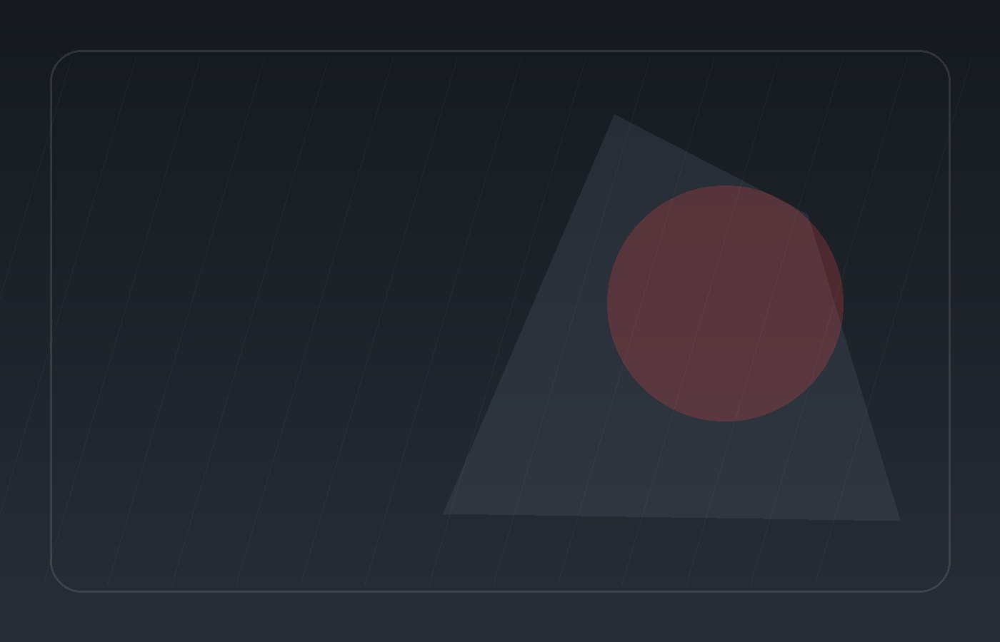

Overview
What maintenance covers and why it matters for the customer journey.
AUTOMOTIVE
Explore maintenance with enough context to understand the scope, decisions and next step before contacting the business.
HOW IT WORKS
What maintenance covers and why it matters for the customer journey.
The core scope, components or information visitors should expect here.
The sequence, decisions or responsibilities involved.
A clear route to continue without guessing what to do next.
DETAILS THAT MATTER
Publish real requirements, timing, policies and responsibilities instead of placeholders.

Any claims, prices, schedules or policies should be verified before launch.
NEXT STEP
Share the details that matter so the team can respond with the right next step.